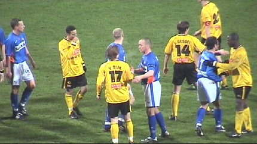

|
Roda JC - RBC (3-1) 11 december 2004
|

Hanebretboy met bier en vlag.
Zeg het met bloemen...

Een buslading Westbrabanders en Zeeuwen. De die-hard supporters van
RBC!
Sfeervol begin op west met honderden flikkersterren.
Toch nog vuurwerk in het PLS!
Trainer Jantje van Dijk van de tegenpartij
dacht slim te zijn door na de toss
te kiezen voor een wisseling van
speelhelft. De kenners weten dat wanneer
de tegenstander de richting
verandert, dit steevast een nederlaag voor ze
oplevert! Statistisch bewezen!!!!!!
Jammer... buitenspeldoelpunt.
Cristiano frommelt de bal binnen: 1-0: (18').
De topscorer van Roda JC.
De technisch onnavolgbare Kone ontdoet zich van drie verdedigers....
.... en scoort 2-0 (25').
Sfeer op Z16 was bij vlagen erg goed.
Vicelich laat Hertog ontsnappen.
Deze scoort vanuit een moeilijke hoek 2-1, (31'). Daarna begint Roda erg
onzeker en verkrampt te voetballen.
In de tweede helft knalt er opeens een flikkerster uit elkaar...
Mijnwerker Bodnar speelde vandaag geen bere-partij als verdediger maar
hij liet leuke kunstjes en een formidabele inzet zien.
De bodychecks op Kone bleven alle onbestraft!!!
Paal....
Sergio krijgt de bal met een gelukje op zijn kixen.
En hij scoort vervolgens de bevrijdende 3-1 (82').

Game over.
RBC-spelers bedanken hun supporters.
Rodaspelers ook.
De bus van de Roosendaalfans ter hoogte van Nederweert.
© Koempels Pleasure Dome
|